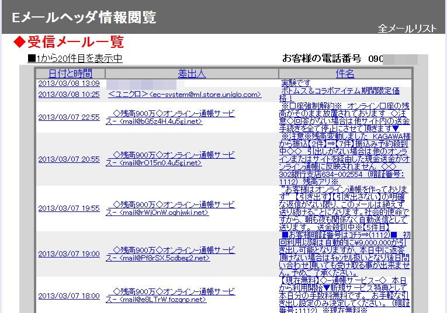

| TOP | weblog | TIPS | Works | リンク |
| 2013-03-03 ソフトバンクさんはなりすましメールの対策は教えてくれない ソフトバンクではMySoftbankで「なりすましメール⇒受け取らない(拒否設定する)」と言う設定がありますが機能しているのか、していないのか、よくわかりません。 個人的な見解としては機能していないように思います。 ソフトバンクさんの言うところの「なりすましメール」ってなんですか？、１５７で聞いたら「ご案内できません」と断られてしまいました。 秘密なのか、回答能力がないのか、恥ずかしくて言えないのか、その辺は分かりませんけど。 ３月２日あたりから、iPhone5に迷惑メールが日に５件くらい送信されて来るようになりました。 本文の内容は殆ど同じなんですけどドメインとも毎回異なっていてるメールアドレスになっています。 電子メールには差出人のアドレスは「ヘッダ」と「エンベロープ(envelope)」の２か所にあります。 「envelope」は直訳すると「封筒」となります。 電子メールのエンベロープはメールの送信と受信を行うメールサーバーがメール本体に付加するデータで、郵便に例えると封筒に書かれている宛先住所氏名と差出人住所氏名と基本的には同じ役割をします。 実際の郵便と違うのはメール本文にも宛先住所氏名と差出人住所氏名が書かれていて、宛先の人にメールを届ける時は封筒を捨ててしまうのです。 ですからメールソフトではエンベロープを直接これを見ることは出来ません。 ですがメールヘッダの「Received：」フィールドに内容が記録されていることがあります。 画面に表示されている差出人は「ヘッダ」と言われるところで、ここを書き換えることは技術的には簡単でが、まともなプロバイダやメールサービスを提供している会社は偽装されないようにしています。 ですからなりすましメールは完全に悪意がないと送信されません。 エンベロープは見ることが出来ませんが、各携帯電話会社では受信メールのメールヘッダーを見るサービスを提供していて、なりすましメールかどうかある程度判断できます。 下はなりすましメールをソフトバンクのEメールヘッダ閲覧サービスで観察した例です。  上図の2013-03-07 22:55 のメールを参照してみました。 メールソフトで表示される部分
メールヘッダ メールソフトでは通常隠されている部分、パソコンのメールソフトは大抵見る機能があります。 スマホのメールソフトでは大抵見ることが出来ないです。
[Received:]が複数ある場合は、下から上の順番でメールが経由・送信されたことを示します。 画面に表示されているアドレスのドメインは「bG5z4H.4u5gj.net」。 ヘッダーの送信元ドメインは「103x245x16x84.pararola.net ([103.245.16.84])」、カッコ内はIPアドレスです。 この様に送信元メールアドレスを詐称してますので「なりすまし」メールと言えるでしょう、 送信元メールアドレスがドメインごと毎回変わるわけですから受信拒否フィルター出来ません。 au、docomoは「なりすまし」の定義をはっきりウェブサイトに記述していて設定で受信拒否出来るようにしています。 ソフトバンクさんは未熟だね、なりすましの定義も一切触れていないし電話で問い合わせても教えてくれない。 「ａｕの迷惑Eメール防止方法」の解説はそのまんまです。 迷惑メールは以下のサイトに転送するとなにかしてくれるらしいです、しつこい迷惑メールは報告してみよう。 迷惑メール相談センター （日本データ通信協会） |